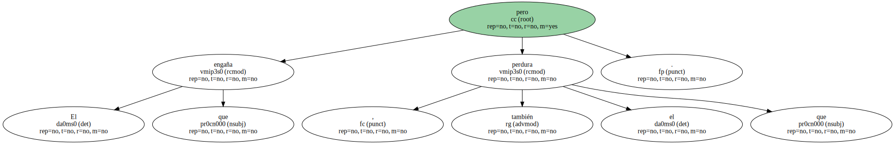

Faltan pocos meses para que se conmemoren los 25 años de la Fundació Miró o , para decirlo de modo , quizá más preciso , pero menos popular , el Centre d'Estudis d'Art Contemporani.
El edificio se inauguró en 1975 , de acuerdo con la iniciativa que Miró había tenido cuatro años antes.
Tanto el edificio , de Josep Lluís Sert , como el contenido artístico que se puede contemplar en él se convirtieron muy pronto en un punto de visita destacado en la montaña de Montjuïc.
El éxito ha ido creciendo.
Van allí los interesados por la obra de Miró , los que quieren ver las diversas exposiciones y actos que se realizan allí , los que valoran la arquitectura de Sert , los que deciden subir a Montjuïc y se lo encuentran sin preverlo.
No he hablado con Rosa Maria Malet , que es su excelente directora , para pedirle datos de visitantes y otros detalles.
Ya se conocerán cuando se celebre el 25º aniversario.
Además , en la Fundació Miró hay un restaurante que es muy agradable , sobre todo cuando hace buen tiempo , porque tiene una parte al aire libre , en un patio interior del museo.
Yo voy a comer allí una vez cada año , para recordar , con otros amigos , a Alex Ferrer Isbert , que trabajaba para la Fundació y murió tan joven.

Joan Miró ha sido uno de los artistas catalanes con más fama internacional.
Sus manchas de colores vivos , perfiladas en negro , sus símbolos , que evocan estrellas y lunas y pájaros , han sido muy imitados , pero todavía más : el estilo Miró ha influido - - posiblemente como ningún otro pintor - - en las formas y colores de la sociedad actual.
Existen muchas obras cartelísticas , diseños de piezas de interiorismo , objetos de uso cotidiano que tienen , aunque sólo sea en alguno de sus detalles , una estética mironiana.
Lo que ocurre es que a menudo no somos conscientes de ello , y eso demuestra hasta qué punto Miró habita en nuestro mundo visual.
Cuando Miró , después de pasar en su juventud por el expresionismo , el cubismo y el fauvismo , llegó a la fase de signos aparentemente simples que lo hicieron tan famoso , algún escéptico decía : " ¿ Eso ? Mi hijo también lo haría ".
Quería decir que aquello no tenía ningún mérito.
Cuando alguien dice de algún artista " yo podría hacerlo como él " , es una señal inequívoca de que el artista ha conseguido el éxito más difícil de todos : el arte de la sencillez.
El que engaña , pero también el que perdura.
